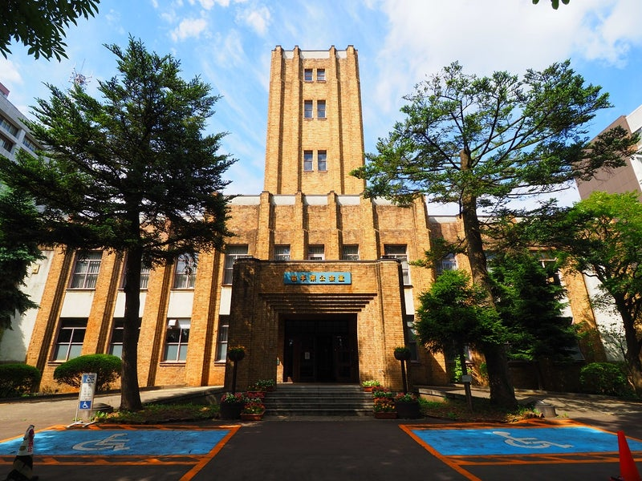

岩手県公会堂は、岩手県盛岡市内丸にある歴史的な建築物です。 昭和天皇の御成婚を記念して建設が計画され、1925年（大正14年）9月に着工し、 1927年（昭和2年）6月に完成しました。
設計は、東京の日比谷公会堂や早稲田大学大隈講堂の設計でも知られる佐藤功一博士が担当しました。 近代コンクリート建築の先駆けとなった建物で、建設当時は県会議事堂、大ホール、 西洋料理店、皇族方の宿泊所という4つの用途を備えていました。
岩手県公会堂は、長い歴史の中で県民の文化活動やさまざまな催しに利用されてきました。 現在も文化芸術活動などに利用されており、2006年（平成18年）には国の登録有形文化財に登録されています。 歴史的な価値を持ちながら、現在も活用され続けていることが特徴的な建物です。